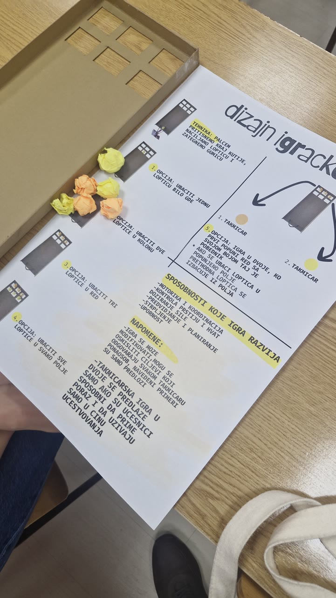
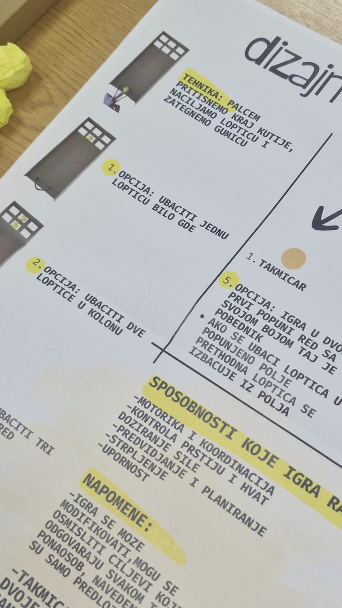
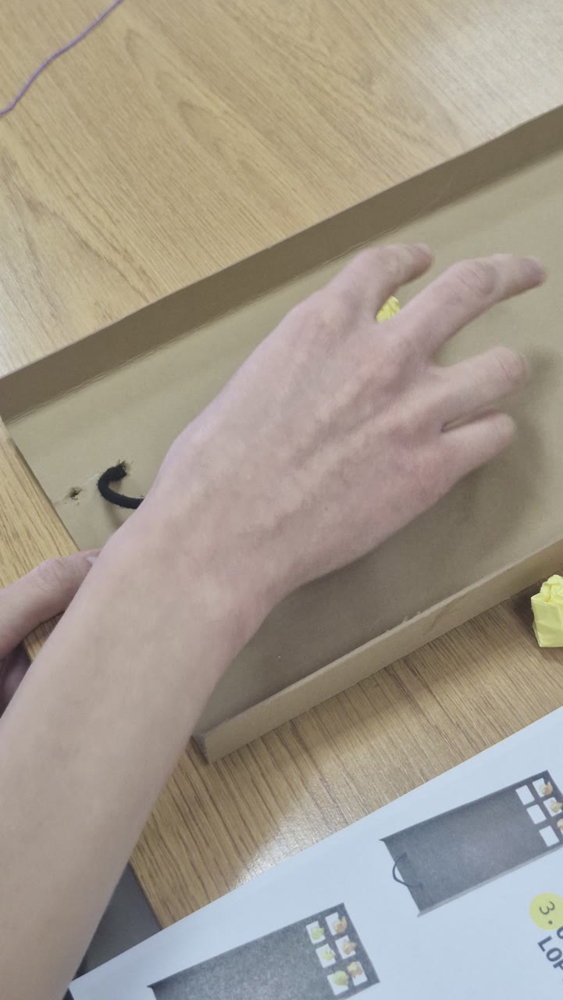
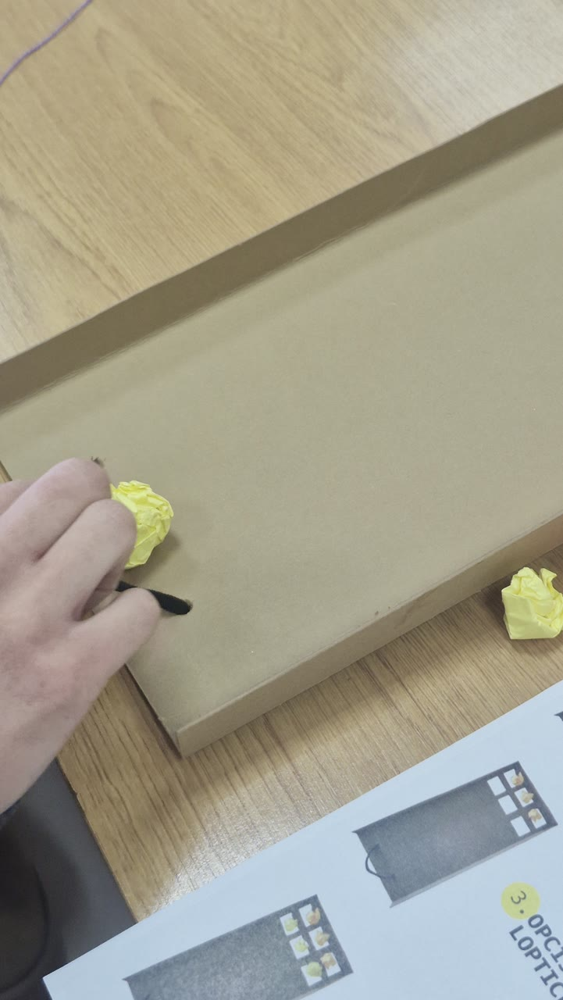
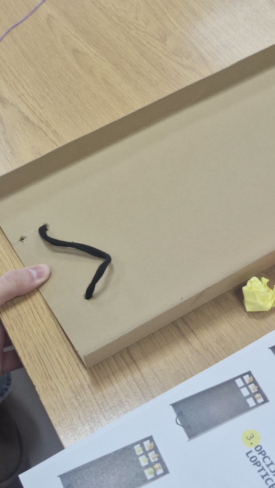
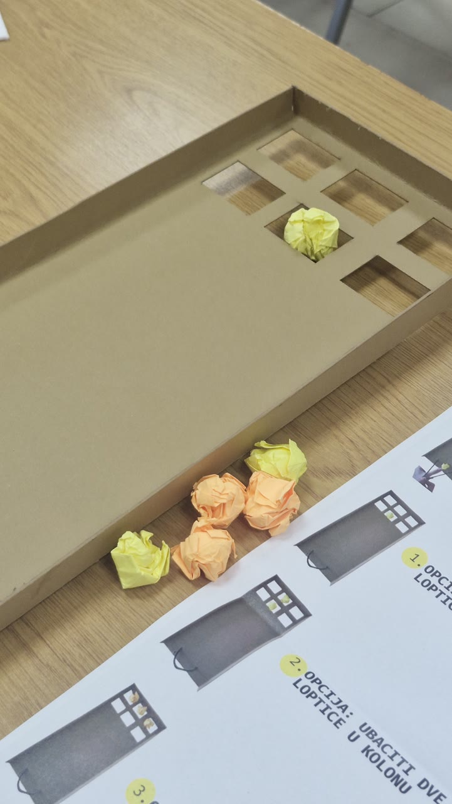
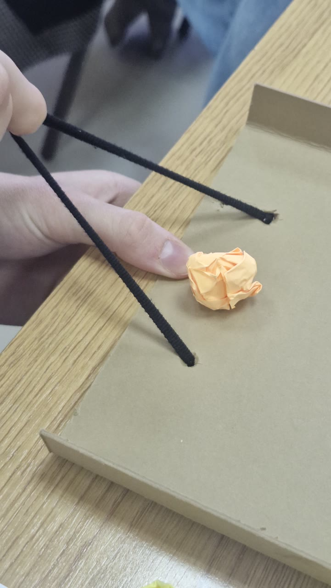

Radovi i primeri / Čas 4
praćka
Iva Žunić110/24
Čas 4
7 prikaza rada · Gradivo časa














Principi univerzalnog dizajna Univerzitet „Union — Nikola Tesla”, Beograd · Fakultet za graditeljski menadžment 2026/2027 · prvi (zimski) semestar · treća godina
Radovi i primeri / Čas 4
Iva Žunić110/24
7 prikaza rada · Gradivo časa






